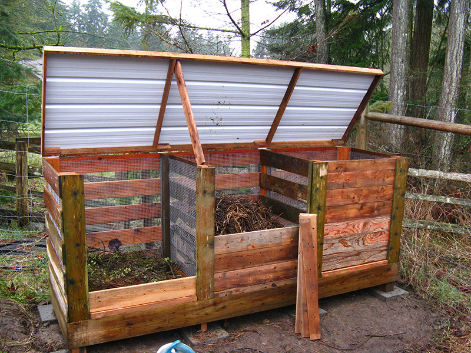

Compostez avec nous !
Le compostage est utilisé par l’homme depuis des millénaires. Une des premières références à l'utilisation du compost en agriculture remonte à des tablettes d'argile gravées de l'Empire Acadien en Mésopotamie, mille ans avant Moïse ! Les Romains en connaissaient la technique, les Grecs et les tribus d'Israël en parlent. Les Chinois ont appliqué les principes du compostage de tout temps.
Alors pourquoi pas vous ?
Le compost est un mélange de matières organiques en décomposition. Un savant équilibre d’azote et de carbone. En forêt, une plante dépérit, meurt et retourne à la terre en se décomposant sur place. Le sol se régénère ainsi, grâce à tous les débris végétaux devenant de l’humus.
Ensemble, nous pouvons le faire !
Une zone de compostage citoyenne est accessible à l’entrée du jardin.
Vous êtes tous les bienvenus pour y déposer vos déchets organiques compostables et ainsi participer à l’amélioration du sol de notre jardin. Venez déposer vos déchets verts (Tontes de pelouse, tailles de haies, broyats végétaux mais pas de résineux) au lieu de faire la file au centre de recyclage. Vous pourrez donc réaliser de réelles économies de temps et d’argent, tout en faisant un geste pour l’environnement.
Afin que notre action soit viable, jouez le jeu : respectez les déchets compostables.
(N’hésitez pas à interpeller un jardinier présent si vous désirez des explications plus précises)

😀Composter les matières vertes, molles et humides = Azote
- Épluchures et déchets de fruits et légumes.
- Marc de café avec le filtre en papier. Les pads en papier peuvent également être mis au compost. On les déchire d’abord, afin de permettre une décomposition plus facile. Sachets et feuilles de thé. Sauf les sachets en matière synthétique.
- Fleurs fanées.
- Tontes de gazon. Elles sont toutefois difficiles à composter. Veuillez les déposer dans le bac réservé aux tontes.
- Végétaux frais (feuilles, plantes de jardin, mousse végétale, mauvaises herbes etc.). Si vous apportez ces matières en grandes quantité, déposez les dans le bac réservé aux tontes.
- Résidus de récolte du potager (trognons, fanes, pieds fanés, éclaircies...).
- Fientes de volailles.
😀Composter les matières brunes, dures et sèches = Carbone
- Papiers, cartons et tissus cellulosiques. Par exemple les mouchoirs en papier, essuie-tout, feuilles de papier journal où on a épluché des légumes, etc. On évite toutes les parties colorées qui peuvent contenir des métaux lourds.
- Bois de taille et broussailles. Ils ne se décomposent bien qu'après broyage ou s'ils sont coupés finement.
- Copeaux et frisures de bois. En petites quantités uniquement. On proscrit les bois traités ou peints.
- Paille.
- Fleurs fanées sèches, foin.
- Tiges et feuilles sèches.
- Litières de petits animaux herbivores : lapin, cobaye, etc.
🙁😖Matières non compostables !
- Huiles et graisses alimentaires.
- Bois de menuiserie et bois traité.
- Poussières d'aspirateur.
- Matières synthétiques.
- Journaux avec couleurs, périodiques illustrés.
- Litières de chats en argile.
- Terre et sable (sauf en petites quantités).
- Chiffons et textiles.
- Litières et excréments de chats et chiens.
- Le pain, les restes de table (Toutefois, ces déchets peuvent être déposés dans le bac “Pour nos poules” qui se feront un repas de fête grâce à vous.